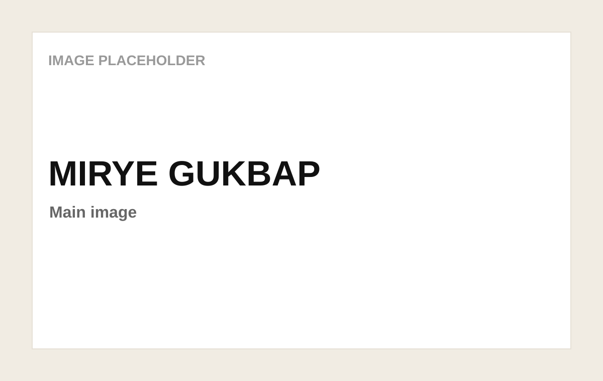
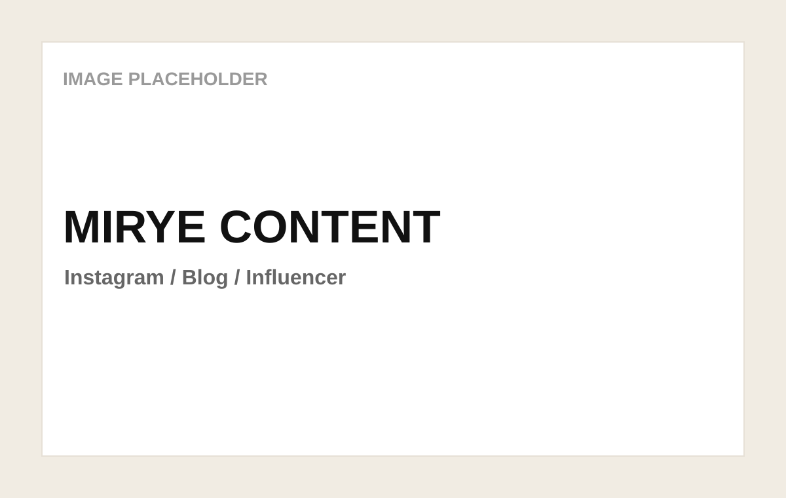
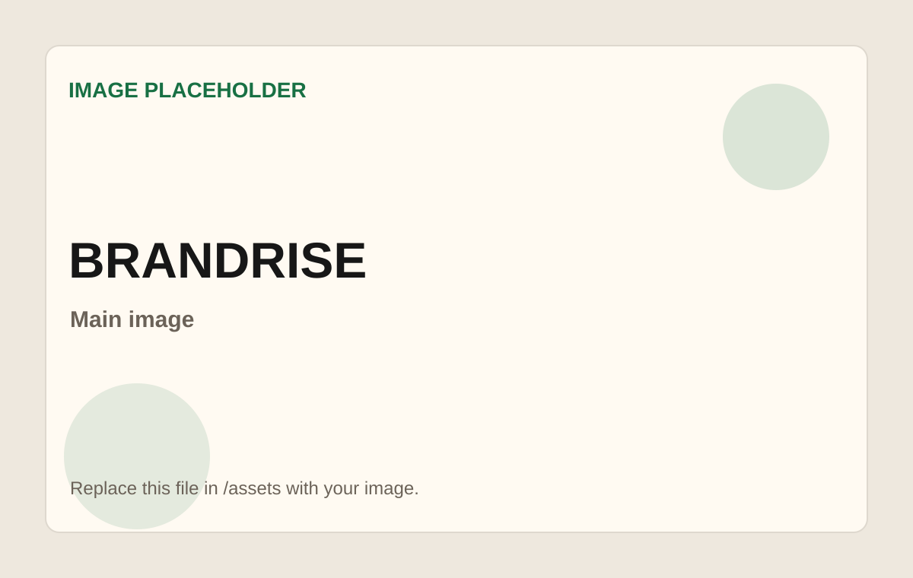
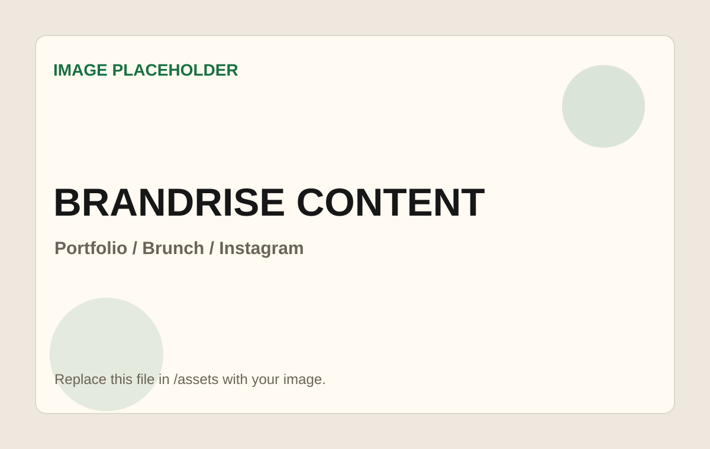
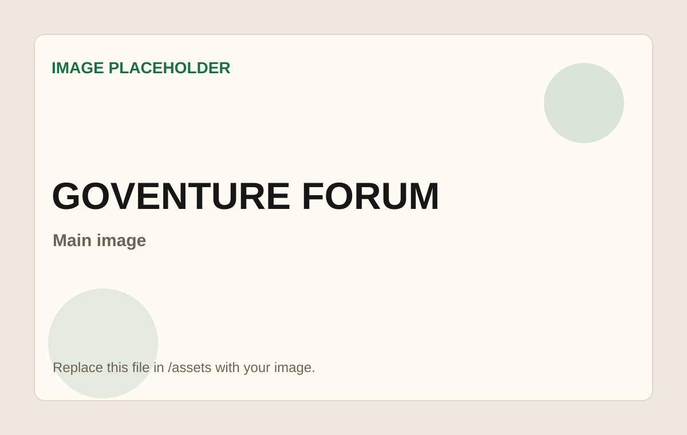
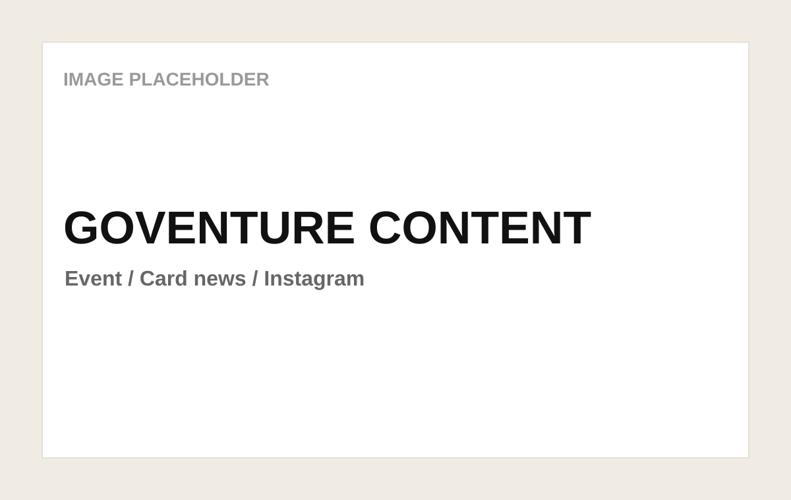

PROJECT 01
미례국밥 · 부산 기반 로컬 국밥 브랜드
01 프로젝트 개요
부산 로컬성과 든든한 한 끼 이미지를 콘텐츠로 쌓아가는 F&B 브랜드 운영 프로젝트.
미례국밥은 부산에서 시작한 돼지국밥 브랜드로, 기본이 잘 잡힌 든든한 한 끼를 지향합니다. 현재 인스타그램 콘텐츠 운영, 블로그 체험단, 인플루언서 협업을 통해 브랜드 신뢰도와 검색 접점을 함께 쌓아가고 있습니다. 특히 강남점 오픈 전후로 ‘부산 기반 국밥 브랜드’라는 인식을 콘텐츠로 강화하는 것이 주요 과제입니다.
운영 콘텐츠 예시


02 AI 활용 현황
"지은 아이디어 물꼬 → ChatGPT가 디벨롭 → 지은이 다시 디벨롭해서 기획."
미례국밥에서는 AI를 콘텐츠 아이데이션과 카피 초안 작성에 가장 많이 활용합니다. 처음부터 완성된 기획안을 맡기기보다, 러프한 아이디어를 던지고 AI가 확장한 방향을 다시 브랜드 톤에 맞게 정리하는 방식으로 사용하고 있습니다.
콘텐츠 아이데이션
카드뉴스 주제, 캠페인 흐름, 릴스 아이디어를 여러 방향으로 빠르게 확장.
카피/커뮤니케이션 문구 정리
인스타 캡션, 카드뉴스 문구, 인플루언서 컨택 및 체험단 안내 문구 정리.
콘텐츠 방향과 카피 초안 고민
여러 방향의 초안 비교 후 디벨롭
브랜드 톤을 주지 않으면 일반적 문구로 나옴
03 레슨런
LESSON
브랜드 톤을 먼저 잡아야 AI가 제대로 씁니다.
미례국밥은 단순 메뉴 소개보다 부산 로컬성, 든든한 한 끼, 기본이 잘 잡힌 국밥이라는 이미지가 중요합니다. 그래서 AI에게 카피를 바로 요청하기보다 브랜드 톤·핵심 메시지·금지 표현을 먼저 전달했을 때, 실제 콘텐츠에 적용 가능한 초안에 가까워졌습니다.
PROJECT 02
브랜드라이즈 · 스타트업 브랜딩/마케팅 프로젝트
01 프로젝트 개요
스타트업과 소규모 브랜드의 메시지, 포트폴리오, 제안 흐름을 정리하는 브랜딩 프로젝트.
브랜드라이즈는 스타트업과 소규모 브랜드를 대상으로 브랜딩·마케팅 전략과 실행을 지원하는 프로젝트입니다. 현재 브랜드 소개 자료, 포트폴리오, 브런치 콘텐츠, 인스타그램 콘텐츠 방향성을 정리하며 서비스 신뢰도를 쌓아가는 단계입니다.
작업물 예시


02 AI 활용 현황
"문장을 쓰기 전에, 무엇을 어떤 순서로 말할지 먼저 정리했습니다."
브랜드라이즈에서는 AI를 단순 카피 작성보다 생각 정리와 구조화에 주로 활용했습니다. 흩어진 아이디어를 문제 정의 → 해결 방식 → 제공 서비스 → 기대 효과 순서로 정리하며 제안서와 포트폴리오의 논리 흐름을 잡는 데 도움을 받았습니다.
소개서/포트폴리오 문구 초안
목차와 핵심 문장 빠르게 정리
브랜드 메시지와 제안 흐름 정리
03 레슨런
LESSON
AI는 카피 작성기보다 생각 정리 파트너로 쓸 때 더 강합니다.
브랜딩 작업에서는 예쁜 문장보다 무엇을 어떤 순서로 말할지 정리하는 과정이 먼저입니다. 제안서나 소개서 작업 시 바로 문장 작성을 요청하기보다, 먼저 목차와 논리 흐름을 AI로 잡아보는 방식이 효율적이었습니다.
PROJECT 03
고벤처포럼 · 스타트업 마케팅 인사이트 포럼
01 프로젝트 개요
월간 포럼의 인사이트와 현장 분위기를 콘텐츠로 전달하고, 행사 참여를 유도하는 프로젝트.
고벤처포럼은 스타트업 관계자를 대상으로 마케팅 인사이트와 네트워킹 기회를 제공하는 월간 포럼입니다. 행사 홍보 콘텐츠, 후기 카드뉴스, 인스타그램 캡션, 연사/브랜드 소개 문구를 통해 월별 포럼의 메시지를 전달합니다.
행사 콘텐츠 예시


02 AI 활용 현황
"행사 정보를 요약하는 것보다, 현장감 있는 콘텐츠로 바꾸는 데 활용했습니다."
고벤처포럼에서는 행사 타이틀, 소개 문구, 후기 카드뉴스 문안, 연사 메시지 요약 등에 AI를 활용했습니다. 매월 주제와 연사가 달라지는 상황에서도 포럼 특유의 톤을 유지하면서 빠르게 초안을 만들 수 있었습니다.
행사 홍보/후기 콘텐츠 초안 작성
주제별 문구 빠르게 도출
월별 주제가 달라도 포럼 톤 유지
03 레슨런
LESSON
행사 콘텐츠는 요약보다 현장감 있는 콘텐츠화가 중요합니다.
AI에게 행사 내용을 단순 요약하게 하면 보도자료처럼 딱딱해지기 쉽습니다. “현장의 열기와 인사이트가 느껴지는 카드뉴스 톤”처럼 전달 분위기까지 함께 지정했을 때 SNS 콘텐츠로 더 자연스럽게 활용할 수 있었습니다.
"AI는 결과물을 대신 만드는 도구가 아니라,
초안을 빠르게 넓히고 정리하는 기획 파트너였습니다."
HIZ 타운홀 · 3개 프로젝트 AI 사용기 · 안지은 · 2026